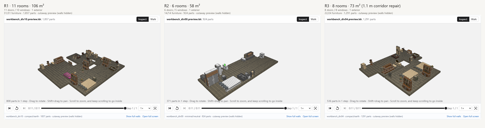
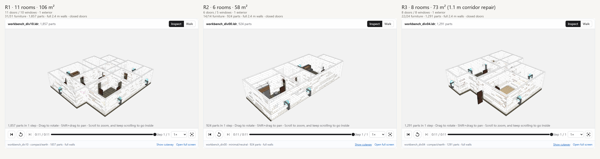

Latest results · updated 26 November 2026
Doors, circulation,
and a 405-item library
What changed since the 11 November benchmark update — including the 26 November layout-closure and door-model pass.
405controlled library16 categories · 9,521 parts
3 / 3real plans closed / connected0 overlaps · 0 door clips
1 / planexterior doorinterior doors form a hallway-rooted tree
1,372files in the tool package6.08 MB · real-plan presets + selftest
The frozen benchmark still uses its 58-item controlled library; v1.6_final is the new default for the workbench and the packaged tool.
01
What changed since 11 November
- Real doors and windows. Openings are carved into the LEGO wall courses; the closed door
60616a, window frame3853and glass3855bare counted in the MPD and BOM. Doors are brown so they read differently from blue window glass; the 2.4 m wall mode is now the Workbench default. - Bathroom-aware door repair. A half-stud door-grid offset was corrected; blocked bathroom doors slide along the shared wall and are removed only when the same bathroom keeps another usable door.
- Circulation. A one-stud grid BFS checks door-to-door connectivity and the reachable floor ratio; low-priority furniture is removed only when it blocks a path.
- Room-level grouping. The solver now groups a dining table with chairs, a bed with bedside cabinet/lamp, and a sofa with TV and coffee table instead of placing every piece independently on a wall band.
- Style-specific programmes. Six styles change both the optional pieces and the target furniture size;
size_classpreference picks small items for compact/minimal, medium for wfh, and large for family/spacious. - Library v1.6_final. 340 v1.5 items + 16 v1.6 promotions + 49 review promotions; validate 405/405. Retrieval: text 339/405, shape 362/405, synonym top-1 54/56, top-3 56/56.
- Demo tool. The local workbench supports presets, uploaded floor plans (Claude/GPT perception), room editing, brief edits, 3/6/9 candidates, 3D preview, and MPD/BOM downloads. The packaged build is 1,372 files / 6.08 MB with a bundled `run-selftest.cmd`.
02
Closed real-plan layouts, one entrance, real-height doors

- Real preset layouts. R1, R2 and R3 load their transcribed
layout_minstead of being re-packed. R3's east bedrooms were disconnected from the west block; the repair adds a 1.1 × 7.0 m hallway and all eight rooms now have a door route. - Door graph. Interior doors are a minimum spanning tree rooted at the hallway/living room, not one door per shared edge. Each real plan has exactly one exterior entrance: R1 11 doors (1 exterior), R2 6 (1), R3 8 (1).
- Door model and height. The visible leaf is now the solid, normally closed
60616adoor with handle (not the glazed panel). The Workbench default is a 10-course 2.4 m wall; an 8-course opening gives a 1.92 m door with a 0.48 m lintel. The viewer opens a lower 1.2 m cutaway band, while the downloadable MPD/LDR keeps the full shell. - Clipping audit. Every placement JSON records door cells vs wall bricks and door approach zones vs furniture. R1/R2/R3 report 0 wall cell hits and 0 furniture zone hits.

03
Three real floor plans
| Scene | Coverage | Parts | Doors / windows | Exterior | Layout | Clips |
|---|---|---|---|---|---|---|
| R1 | 31 / 31 | 1,857 | 11 / 10 | 1 | closed | 0 / 0 |
| R2 | 14 / 14 | 924 | 6 / 5 | 1 | closed | 0 / 0 |
| R3 | 22 / 24 | 1,291 | 8 / 8 | 1 | closed | 0 / 0 |
R3 includes the automatic 1.1 m corridor repair; 2 dining chairs are still dropped because the room is compact. “Clips” counts wall-cell / furniture-zone door intersections. Brown parts are doors; blue parts are windows. The Exterior column counts only doors with a single room.
04
Same plan, six style programmes

| Style | Size bias | Programme delta | Coverage | Parts |
|---|---|---|---|---|
| minimal | 0.85 | remove plant/lamp/bookshelf/tv; chairs ≤2 | 21 / 23 | 1,087 |
| compact | 0.80 | remove plant/bookshelf; chairs ≤2 | 28 / 28 | 1,225 |
| balanced | 1.00 | base programme | 29 / 33 | 1,112 |
| family | 1.05 | +2 dining chairs, armchair, plant, lamp, second bedside pair | 36 / 40 | 1,197 |
| wfh | 0.95 | bedroom desk/chair/bookshelf + living desk/bookshelf | 36 / 38 | 1,265 |
| spacious | 1.15 | +2 plants, +2 lamps, bookshelf, +2 dining chairs | 34 / 40 | 1,268 |
05
The demo tool

- Run locally:
start-workbench.cmd, then openhttp://127.0.0.1:8000/app/workbench.html. - Modes: preset floor plan (studio/1–3 bedroom or real R1/R2/R3), upload real plan (Claude/GPT vision), or generate from room count.
- Edits: add / remove / replace / use / style in one sentence; candidates show style, palette, plan thumbnails, layout QA and door-clip counts.
- Outputs: 3D preview, MPD, BOM, placements JSON and scene IR.
- Package: 1,372 files / 6.08 MB; real-plan examples and `run-selftest.cmd` included; door/layout QA and tall-wall modes in the workbench.
06
Limitations and next
- VLM realism is about 3.0–3.5 / 5; the demo uses three curated scenes, not a universal human-level claim.
- R3's real layout needed a 1.1 m corridor repair; the compact dining room still drops some chairs. R1/R2 are the cleanest demo scenes.
- The frozen benchmark and its 58-item library are unchanged; v1.6_final is the new product library.
- Next: library v1.7 promotion from the current style/size campaign, targeted bath/sofa/chair/fridge/washer QC, and final Term-End packaging.
Contact: Xiao Chuanyi · Department of Computer Science and Engineering, CUHK · supervised by Prof. Philip Fu.